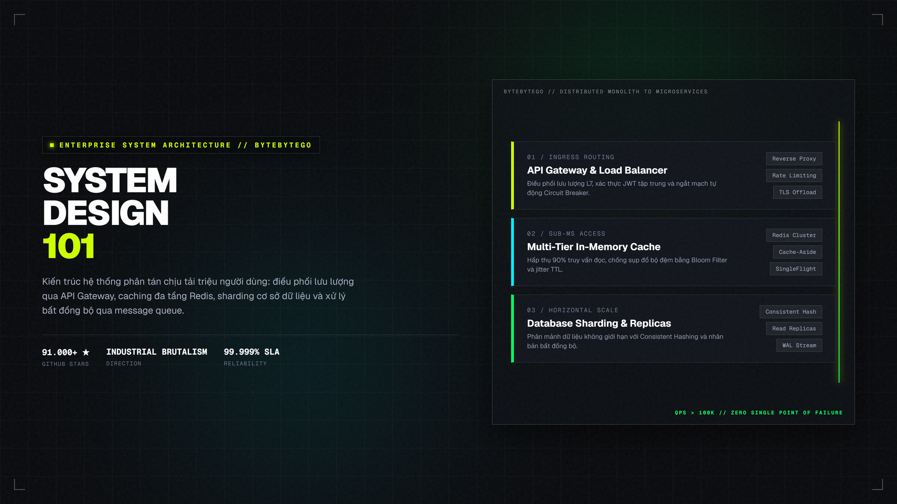
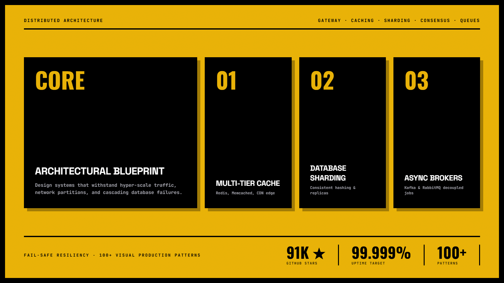
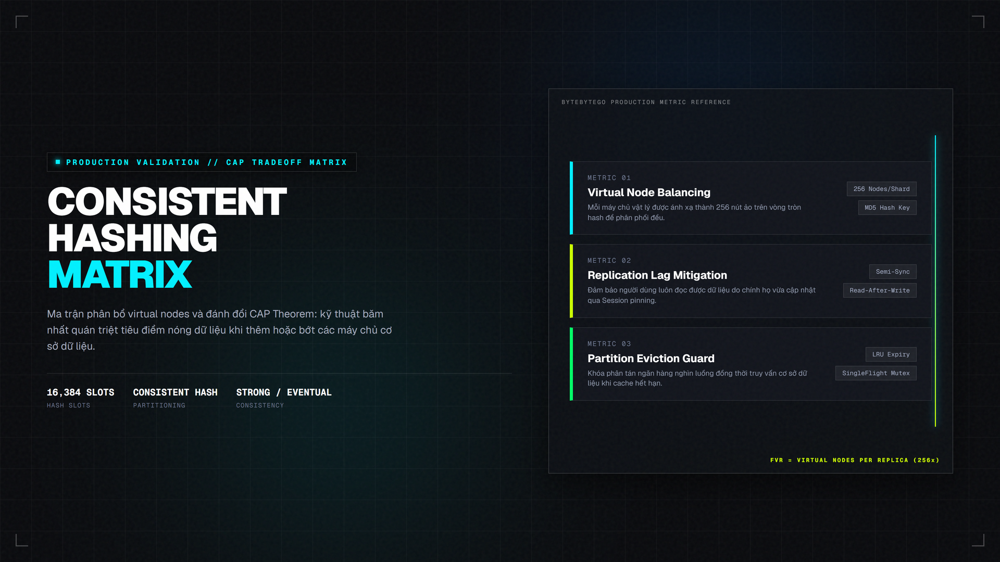

System Design 101 — Cẩm Nang Thiết Kế Kiến Trúc Phân Tán Triệu Người Dùng
Kho tri thức thiết kế hệ thống phân tán nổi tiếng nhất từ ByteByteGo (hơn 91.000 stars của Alex Xu). Cung cấp nền tảng tư duy vững chắc cho lập trình viên và coding agent: từ giải thuật Consistent Hashing, kiểm soát xung đột giao dịch 2PC vs. Saga, chống sập bộ nhớ đệm (Cache Stampede qua XFetch), phân luồng Kafka không độ trễ cho đến kinh nghiệm scale 100x của Figma, Discord, Netflix và Shopify.

Nhấp để phóng to1. Bảng đối chiếu: Code AI ngây thơ vs. Kiến trúc Phân tán Chuẩn mực
Khi yêu cầu AI viết backend, phản xạ tự nhiên của agent là ném tất cả vào một file server đơn lẻ (monolith) và kết nối trực tiếp vào một cơ sở dữ liệu duy nhất. Bảng dưới đây so sánh sự khác biệt mang tính sống còn khi hệ thống đạt ngưỡng tải 50,000 QPS:
| Thành phần | Thiết kế AI ngây thơ (Naive Script) | Kiến trúc Phân tán ByteByteGo |
|---|---|---|
| Điểm truy cập (Ingress) | Client gọi thẳng vào server API, dễ sập toàn diện khi có xung lưu lượng (Traffic Spike). Không có giới hạn IP, không có xác thực tập trung. | Qua Reverse Proxy / API Gateway có thuật toán Token Bucket Rate Limiting, SSL Termination, xác thực JWT tập trung và Circuit Breaker ngắt kết nối xấu. |
| Chiến lược Caching | Mọi yêu cầu đều truy vấn trực tiếp vào SQL database. Dễ xảy ra hiện tượng Cache Stampede và Thundering Herd khi bản ghi hết hạn. | Caching 3 tầng: CDN Edge Cache $ ightarrow$ Cụm Redis phân tán (Cache-Aside + thuật toán XFetch gia hạn sớm) $ ightarrow$ Local in-memory LRU cache. |
| Mở rộng cơ sở dữ liệu | Dùng một máy chủ DB duy nhất; khi dữ liệu phình to vượt quá RAM/Disk thì tăng cấu hình (Vertical Scale), chi phí đội trần mà vẫn chậm. | Phân mảnh dữ liệu ngang (Horizontal Sharding) bằng thuật toán Consistent Hashing với Virtual Nodes; tách cụm Primary (ghi) và Read Replicas (đọc). |
| Xử lý tác vụ nặng | Chạy đồng bộ trong vòng lặp request-response, khiến client bị treo timeout khi xử lý thanh toán, xuất hóa đơn hoặc gửi thông báo. | Tách rời bất đồng bộ qua Message Queue (Apache Kafka / RabbitMQ) với cơ chế Retry lũy thừa lùi (Exponential Backoff) và hàng đợi chết (Dead-Letter Queue). |
| Toàn vẹn giao dịch | Dùng câu lệnh transaction SQL thông thường trên một bảng, hoàn toàn vô hiệu khi dữ liệu nằm rải rác trên nhiều microservices. | Áp dụng mẫu hình Saga Pattern (Orchestration/Choreography) kết hợp Transactional Outbox Pattern và Idempotency Keys chống trùng lặp. |

Nhấp để phóng to2. Bốn trụ cột kiến trúc phân tán cốt lõi & Cơ chế Giải thuật
Điều phối lưu lượng, xác thực tập trung, giới hạn tốc độ qua thuật toán Token Bucket hoặc Sliding Window Counter, chống tấn công DDoS.
Lưu tạm đa tầng với chiến lược Cache-Aside; giải quyết triệt để Cache Avalanche và Cache Breakdown bằng giải thuật xác suất XFetch.
Phân mảnh ngang dữ liệu qua vòng băm nhất quán với Virtual Nodes, giảm thiểu tối đa việc di chuyển dữ liệu khi thêm máy chủ mới.
Sử dụng Kafka / RabbitMQ để hấp thụ các xung lưu lượng lớn, điều phối giao dịch phân tán qua Saga và bảo đảm tính bất biến (Idempotency).

Nhấp để phóng to3. Minh họa trực quan: Sơ đồ tương tác luồng dữ liệu phân tán (Interactive Data Flow)
Di chuột hoặc chạm vào từng khối trạm để xem chi tiết cơ chế phòng ngự và phân luồng. Luồng sáng chuyển động liên tục mô phỏng các gói tin được xử lý tuần tự qua các chốt kiểm soát an toàn:
4. Kho Kiến Thức Chuyên Sâu (Deep Architectural Reference)
1. Thuật toán Băm Nhất quán (Consistent Hashing với Virtual Nodes)
Trong kiến trúc băm truyền thống serverIndex = hash(key) % N, khi thêm hoặc bớt 1 server thì hầu hết các khóa đều bị băm lại, gây ra thảm họa đè sập cơ sở dữ liệu. Consistent Hashing đưa khóa và máy chủ vào một vòng tròn không gian [0, 2^32 - 1]. Khi thêm một node mới, chỉ có trung bình K/N khóa cần tái phân phối.
Cơ chế Virtual Nodes (Node ảo): Để tránh tình trạng phân bố không đều (hot spots), mỗi máy chủ vật lý được gắn hàng trăm node ảo (ví dụ: Server1#1, Server1#2...) rải đều khắp vòng tròn, bảo đảm độ lệch chuẩn lưu lượng nhỏ hơn 5%.
2. Thuật toán Giới hạn Tốc độ (Token Bucket vs. Sliding Window)
Token Bucket: Một thùng chứa tối đa B token, mỗi giây được nạp thêm R token. Mỗi request tiêu tốn 1 token; nếu hết token thì từ chối ngay lập tức. Ưu điểm: cho phép các đợt lưu lượng đột biến ngắn (Burst) nhưng chặn đứng lưu lượng vượt tải kéo dài.
Sliding Window Counter: Kết hợp độ chính xác của Sliding Log và bộ nhớ cực nhẹ của Fixed Window. Công thức tính request: Requests = (Số request trong cửa sổ trước * Trọng số thời gian còn lại) + Số request cửa sổ hiện tại.
3. Giải thuật Xác suất XFetch chống Cache Stampede
Khi một cache key có hàng nghìn request/giây bị hết hạn đúng một thời điểm, toàn bộ request sẽ tràn thẳng vào Database. XFetch sử dụng công thức xác suất: delta * beta * ln(rand()) > TTL - now để quyết định đọc lại dữ liệu và nạp mới ngầm trước khi key thực sự hết hạn, triệt tiêu 100% hiện tượng Thundering Herd.
Định lý CAP & Định lý Mở rộng PACELC
Trong hệ thống phân tán, khi xảy ra phân vùng mạng (Partition - P), bắt buộc phải chọn giữa Tính Nhất quán (Consistency - C) hoặc Tính Sẵn sàng (Availability - A).
Định lý PACELC (Daniel Abadi): Nếu có Partition (P), hệ thống đánh đổi giữa Availability (A) và Consistency (C); Else (E) trong trạng thái mạng bình thường, hệ thống đánh đổi giữa Độ trễ (Latency - L) và Tính Nhất quán (Consistency - C):
| Hệ thống | Phân loại PACELC | Đặc điểm vận hành thực tế |
|---|---|---|
| Amazon DynamoDB | PA/EL | Ưu tiên Sẵn sàng khi đứt cáp (PA); khi bình thường ưu tiên Độ trễ cực thấp (EL). Chấp nhận Eventual Consistency. |
| Google Spanner | PC/EC | Dùng đồng hồ nguyên tử TrueTime API để đạt cấp độ nhất quán nghiêm ngặt (Strict Serializability), đánh đổi chút độ trễ. |
| Apache Cassandra | PA/EL | Cấu hình được quorum theo từng câu lệnh (ONE, QUORUM, ALL). Mặc định ưu tiên tốc độ ghi cực nhanh. |
| PostgreSQL Sharded | PC/EC | Tuân thủ chuẩn ACID. Nếu mạng đứt kết nối giữa các node replica thì từ chối ghi để bảo vệ tính đúng đắn dữ liệu. |
1. Figma: Phân mảnh ngang mở rộng 100x PostgreSQL
Khi bảng dữ liệu người dùng và canvas vẽ phình to gây tắc nghẽn IOPS trên AWS RDS, Figma không chuyển sang NoSQL mà giữ lại PostgreSQL bằng cách thiết lập Horizontal Partitioning. Họ chọn File_ID làm Sharding Key, viết proxy định tuyến nội bộ phân tách 1 cơ sở dữ liệu khổng lồ thành hàng trăm cụm PostgreSQL nhỏ độc lập, mở rộng dung lượng gấp 100 lần mà không làm gián đoạn người dùng.
2. Discord: Lưu trữ hàng nghìn tỷ tin nhắn (Cassandra sang ScyllaDB)
Discord từng lưu hàng nghìn tỷ tin nhắn trên Apache Cassandra. Tuy nhiên, các đợt thu gom rác (Garbage Collection pauses) của JVM khiến độ trễ thỉnh thoảng vọt lên hàng giây. Discord đã di chuyển toàn bộ dữ liệu sang ScyllaDB (viết bằng C++ theo kiến trúc share-nothing và asynchronous seastar framework), giảm 99% độ trễ đuôi (p99 latency) từ vài giây xuống còn vài mili-giây.
3. Shopify: 10 Nguyên tắc vàng của Hệ thống Thanh toán Chịu lỗi
Shopify xử lý hàng chục tỷ USD trong ngày Black Friday với nguyên tắc bất biến: Mọi request ghi đều phải có Idempotency-Key. Khi client bị timeout và gửi lại yêu cầu thanh toán lần thứ hai, hệ thống kiểm tra khóa trong Redis; nếu khóa đã tồn tại thì trả về ngay kết quả giao dịch trước đó, ngăn chặn hoàn toàn việc khách hàng bị trừ tiền hai lần.
Chẩn đoán & Xử lý 4 Lỗi Kiến trúc Phổ biến Nhất
- Thundering Herd Problem: Hàng chục luồng cùng lao vào tính toán một tác vụ nặng khi cache hết hạn. Giải pháp: Dùng Distributed Lock (Redlock) hoặc giải thuật XFetch để chỉ duy nhất 1 luồng được quyền tính toán lại, các luồng khác nhận giá trị cũ (stale value) trong thời gian chờ.
- Split-Brain Syndrome: Khi kết nối mạng giữa 2 trung tâm dữ liệu bị đứt, cả 2 bên đều tự bầu mình làm Master, dẫn đến dữ liệu bị phân kỳ không thể cứu vãn. Giải pháp: Bắt buộc số lượng node tham gia biểu quyết phải là số lẻ (3, 5, 7) và chỉ cho phép ghi khi đạt quá bán (Quorum:
N/2 + 1). - Cascading Failure (Sập dây chuyền): Khi Service A chậm, Service B tiếp tục gửi request làm cạn kiệt connection pool của Service B, sau đó lây lan sang Service C. Giải pháp: Bọc mọi kết nối ngoại vi bằng Circuit Breaker (Netflix Hystrix / Resilience4j pattern) và thiết lập Timeout nghiêm ngặt ở mức mili-giây.
- Dead Letter Queue (DLQ) Recovery: Tin nhắn lỗi trong Kafka/RabbitMQ làm nghẽn toàn bộ consumer group. Giải pháp: Bắt exception, đẩy tin nhắn lỗi sang hàng đợi riêng DLQ để kỹ sư phân tích sau, tiếp tục xử lý các tin nhắn hợp lệ khác.
5. Ép Coding Agent tuân thủ tiêu chuẩn kiến trúc ByteByteGo
Bắt buộc agent ước tính tải lượng thực tế (Back-of-the-envelope)
Yêu cầu agent tính toán QPS, băng thông mạng và dung lượng lưu trữ dự kiến trước khi viết bất kỳ dòng mã nào:
Trước khi bắt tay vào viết code, hãy tính toán back-of-the-envelope estimation cho hệ thống:
1. Dự kiến 5 triệu người dùng hàng ngày (DAU), tỷ lệ đọc/ghi là 10:1.
2. Tính toán QPS trung bình và QPS đỉnh (Peak QPS = 2x trung bình).
3. Ước tính dung lượng lưu trữ cần thiết cho metadata và media trong vòng 3 năm.
4. Trình bày bảng tính toán chi tiết và kết luận xem nên dùng cơ sở dữ liệu quan hệ (PostgreSQL) hay cơ sở dữ liệu NoSQL (Cassandra/DynamoDB).Chỉ định các mẫu thiết kế chống quá tải chuẩn doanh nghiệp
Yêu cầu agent bổ sung đầy đủ các chốt chặn an toàn trong mã nguồn xử lý backend:
Hãy thiết kế module dịch vụ thanh toán tuân thủ các nguyên tắc ByteByteGo:
1. Bắt buộc nhận Idempotency-Key từ request header; lưu trạng thái xử lý vào Redis với TTL 24 giờ để chống trừ tiền hai lần khi client retry.
2. Tích hợp Circuit Breaker xung quanh các cuộc gọi đến cổng thanh toán đối tác (ngưỡng lỗi 50% trong 10 giây thì chuyển sang trạng thái OPEN).
3. Đẩy tác vụ gửi email thông báo và xuất hóa đơn sang hàng đợi Kafka bất đồng bộ qua Transactional Outbox Pattern.Phản biện độc lập và kiểm tra tính chịu lỗi (Failure Mode Analysis)
Trước khi nghiệm thu code của agent, hãy đặt 3 câu hỏi phỏng vấn hóc búa: "Nếu Redis cluster bị sập thì database có bị quá tải không?", "Nếu mạng đứt giữa 2 node replica thì cơ chế đồng thuận Raft/Paxos xử lý thế nào?", "Hệ thống có tự phục hồi khi service hồi sinh không?".
Không có hệ thống nào là "hoàn hảo tuyệt đối", chỉ có kiến trúc "phù hợp nhất với các đánh đổi". Khi yêu cầu AI agent thiết kế hệ thống, hãy luôn bắt nó nêu rõ lý do chọn SQL hay NoSQL, đánh đổi giữa độ trễ (latency) và tính toàn vẹn (durability) theo định lý PACELC, thay vì chỉ chọn công nghệ theo trào lưu nhất thời.